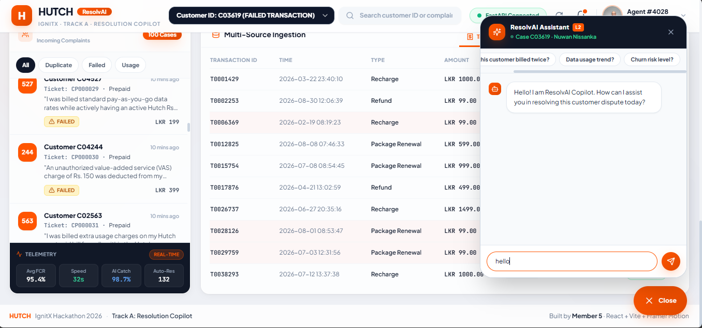
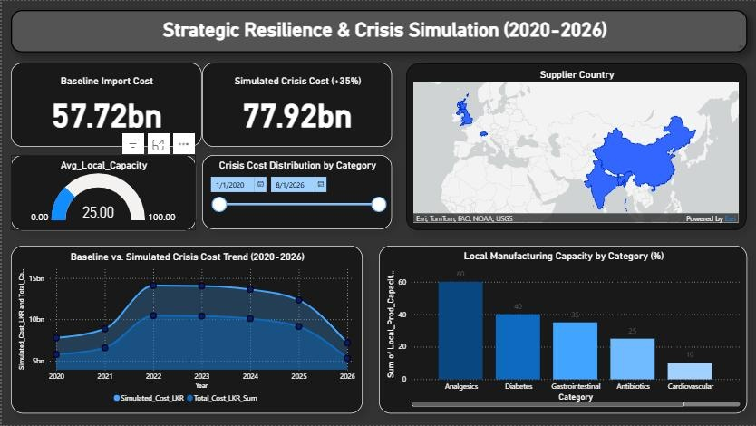
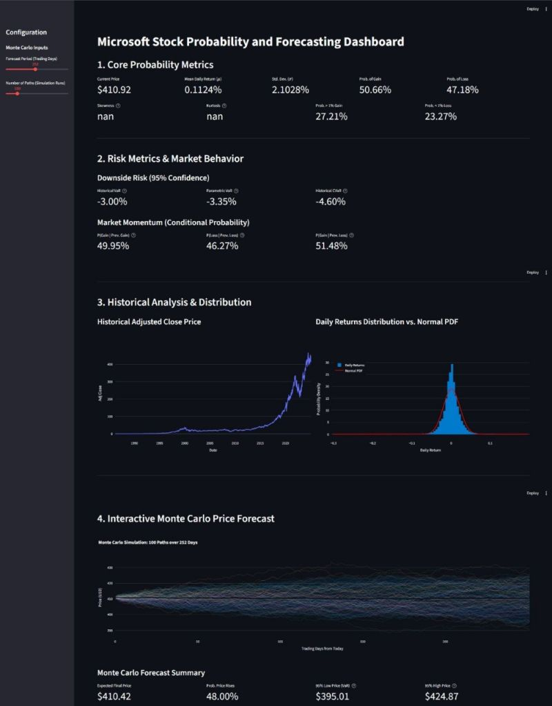
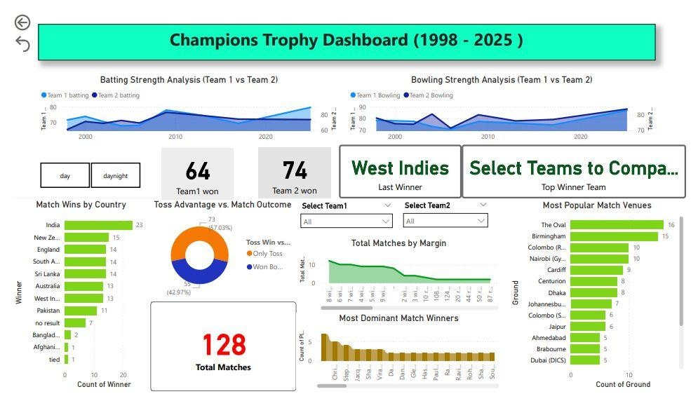
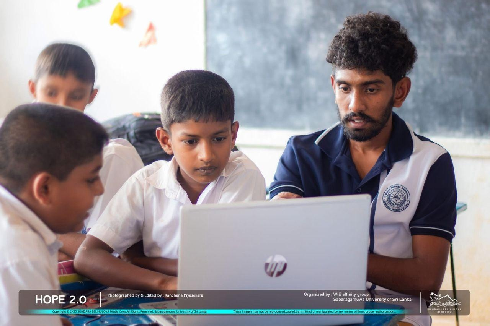
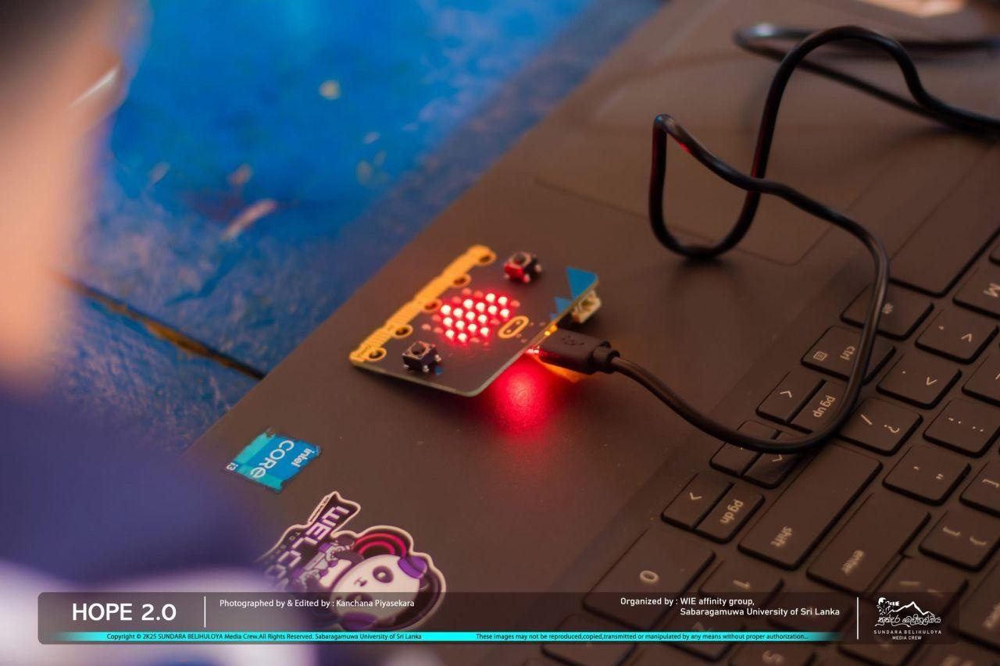
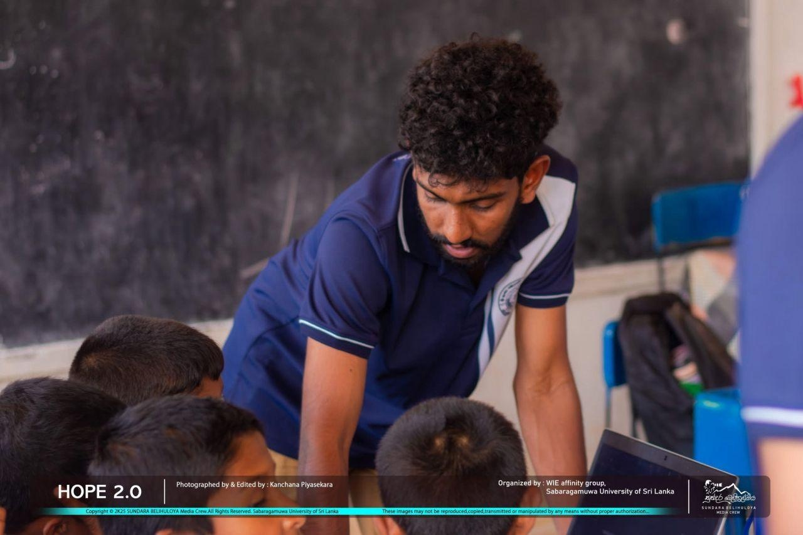
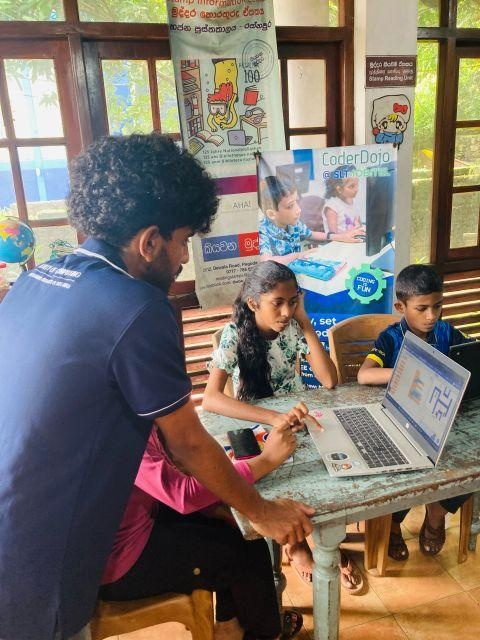
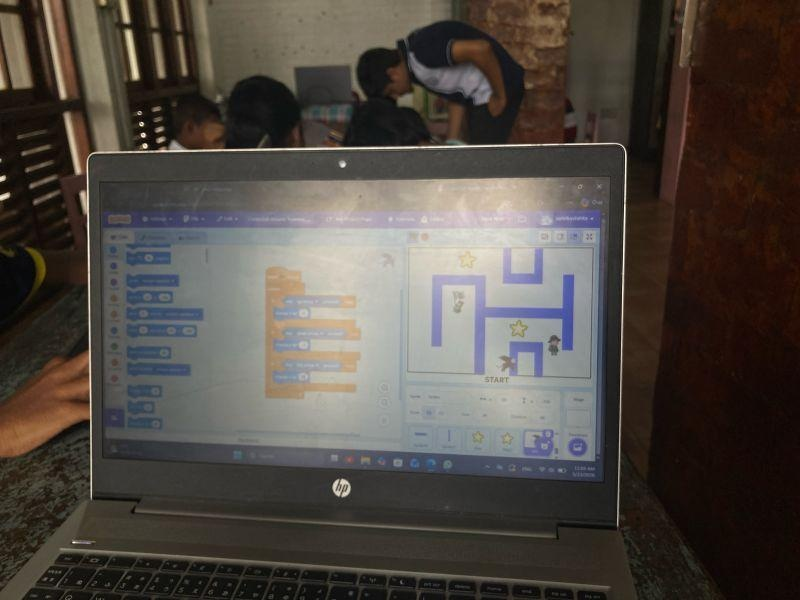
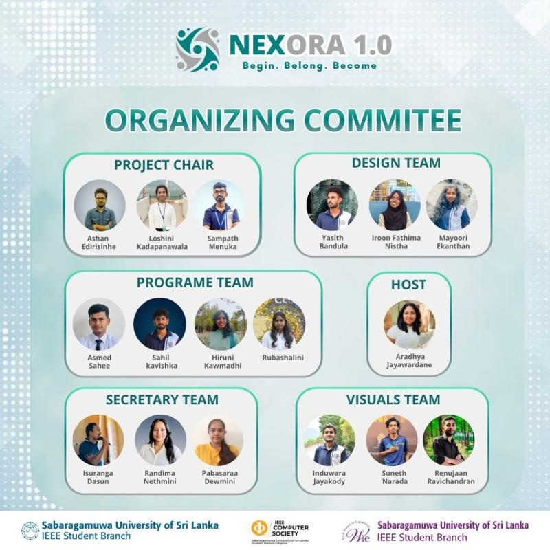

Exploring Data Intelligence. Engineering Intelligent Systems.
"Exploring AI, machine learning, language, and intelligent systems to build practical solutions to real-world challenges."
I'm a Data Science undergraduate exploring Artificial Intelligence, Machine Learning, and Software Engineering to build intelligent, practical solutions for real-world challenges — from predictive pipelines and computer vision to scalable full-stack architectures.
SAHIL KAVISHKADATA SCIENCE UNDERGRADUATESabaragamuwa Univ. of Sri Lanka
RESEARCH TELEMETRY HUD
NODE OPERATIONAL
ACADEMIC STATUSBSc (Hons) in Data Science Faculty of Computing · Sabaragamuwa University of Sri Lanka
PRIMARY DIRECTIVEAI Systems · ML Pipelines · Full-Stack
ACTIVE BUILDSmartBuild AI (FastAPI + XGBoost + Gemini)
BASE LOCATIONAnuradhapura, Sri Lanka (GMT+5:30)
PUBLIC REPOSITORIES18
AVAILABILITYOpen for Research & ML Internships
01 // TOPOLOGY
Data Science Lifecycle Knowledge Graph
Explore how core AI disciplines, mathematical modeling, and engineering systems intersect across my research and builds. Select any of the 13 connected lifecycle nodes to inspect verified stack telemetry, mathematical formulations, and linked projects.
GRAPH v4.0 // 13 CONNECTED LIFECYCLE NODES
COGNITIVE ARCHITECTURES
Artificial Intelligence
Developing agentic systems, generative intelligence, and automated decision engines that bridge mathematical models with real-world client workflows.
Production platforms, research experiments, and collaborative hackathon initiatives. Inspect architectural case studies, verified problem statements, and real codebases.
16 VERIFIED SYSTEMS // 5 FEATURED CASE STUDIES
FLAGSHIP PLATFORMACTIVE LAB BUILD · 25 DISTRICTS
SmartBuild AI — Construction Intelligence Platform
An AI-powered architectural CAD, computer-vision floor-plan analyzer, and CIDA-indexed cost estimation platform for Sri Lanka's residential construction sector — bridging architectural studio drafting, material forecasting, and multi-bank loan feasibility in a unified system.
The Problem: Residential builders suffer from unpredictable material price inflation, manual quantity surveying errors, and high loan rejection rates due to misaligned debt-service-ratio (DSR) documents.
Technical Approach: Procedural Three.js WebGL CAD generation from plot dimensions, backed by an XGBoost regressor modeling non-linear CIDA material price constraints across all 25 Sri Lankan districts.
Sahil's Role: Architected the system, built the XGBoost regional price forecasting model, and implemented the multi-bank 45% DSR loan eligibility underwriting matrix (BOC, Commercial Bank, HNB, Sampath, NSB).
Verified Outcomes: Captures district-level transport cost variance from Colombo supply ports, preventing severe under-bidding on cement and steel.
CropSafe AI — National Fertilizer Quality & Economic Loss Forecasting
Sri Lanka's national fertilizer authenticity and yield-loss prediction intelligence platform, ground-truthed on 2,002 empirical laboratory test certificates spanning all 9 provinces.
The Problem: Counterfeit agricultural fertilizers cause smallholder farmers harvest deficits exceeding 20% and catastrophic financial ruin across vulnerable agricultural districts.
Technical Approach: Champion LightGBM adulterant classifier with sub-2ms inference, dual Gradient Boosting regressors for yield deficits (%) and monetary damage (LKR/ha), and Isolation Forest chemical anomaly detection.
Sahil's Role: End-to-end research, dataset curation of 2,002 laboratory certificates across 9 provinces, feature engineering, model evaluation, and provincial GIS decision engine.
Verified Results:94.6% Test Accuracy on fertilizer classification; R² > 0.96 on crop yield loss estimation; deployed interactive Streamlit decision dashboard.
A statistically calibrated, trustworthy clinical machine learning pipeline for predicting 30-day unplanned hospital readmissions with demographic fairness guarantees.
The Problem: Black-box clinical ML models suffer from probability miscalibration, demographic bias across sex and age strata, and heavy tail loss on clinical decision support.
Technical Approach: Tri-model stacking ensemble blending CatBoost, LightGBM, and Lasso Logistic Regression via SLSQP constrained optimization; Platt Sigmoid calibration [0.0248, 0.7280]; and Shannon Entropy selective classification deferring ambiguous cases.
Sahil's Role: Clinical risk feature engineering (AKI, cardiorenal syndrome, polypharmacy), ensemble blending optimization, Platt probability calibration, and fairness auditing.
3D WEBGL ENGINE60 FPS BROWSER ENGINE · OPEN SOURCE
Sinharaja — The Lost Expedition: 3D Tactical Survival Game
A browser-based, First-Person 3D Tactical Survival & Forensic Mystery Game engineered entirely in React and Three.js (WebGL) running at a locked 60 FPS without external desktop game engines.
The Problem: Traditional cultural and educational simulation games require heavy desktop installers and bulky commercial engines (Unity/Unreal), preventing zero-install web accessibility.
Technical Approach: Custom procedural terrain rendering, dynamic flashlight & UV beam lighting, AABB/Raycasting collision physics, real-time leech blood loss, hypothermia management, toxic gas vents, and procedural Web Audio API synthesis.
Sahil's Role: Engineered procedural 3D terrain, collision physics, survival mechanics, Web Audio sound synthesis, endemic wildlife forensic journal, and real-time Sinhala/English localization.
Verified Results:Smooth 60 FPS execution entirely client-side in standard web browsers with zero installation; open source on GitHub.
A hybrid restoration framework combining a 7-stage classical digital signal processing pipeline with a deep residual neural backbone (NAFNet-APEX) for sensor noise restoration.
The Problem: Low-light smartphone camera sensors exhibit severe Poisson photon-shot noise, Gaussian read noise, CFA chromatic blotching, and dark-current hot pixels.
Technical Approach: Dual-Engine Framework: Engine A (7-Stage Classical DSP for CPU: Adaptive Rank-Order Defect Suppression, Anisotropic Diffusion, Dual-Basis DWT BayesShrink, NLM, Laplacian detail fusion) and Engine B (Deep Residual Backbone NAFNet-APEX v10 with 86.49M params, compound Charbonnier + D-SSIM loss).
Sahil's Role: Classical DSP filter architecture, assisted in NAFNet compound loss formulation, PSNR/SSIM evaluation, and verified offline CPU fallback.
Verified Results:32.42 dB PSNR and 0.9205 SSIM; Composite Score: 0.6863 (+160.6% relative gain over baseline).
Search by keyword or filter by domain to explore full codebases, data engineering pipelines, stochastic studies, and collaborative platforms.
CAPSTONE // AGRI-AI94.6% TEST ACC
INSPECT ↗
AI · AGRI-TECH CAPSTONEACADEMIC RESEARCH
CropSafe AI — Fertilizer Quality & Economic Loss Forecasting
National fertilizer authenticity intelligence platform ground-truthed on 2,002 lab certificates across all 9 provinces. LightGBM fraud classifier paired with yield deficit regressors (R²>0.96) and anomaly detection.
First-person 3D tactical survival & forensic mystery game set in Sri Lanka's Sinharaja rainforest. Built from scratch with React & Three.js (WebGL) running at 60 FPS with raycasting physics and Web Audio synthesis.
Secured 3rd Place globally in the ML & AI Nexus 2026 Hackathon. Tri-model stacking ensemble (CatBoost, LightGBM, Lasso Logistic Regression) predicting unplanned readmissions with Platt Sigmoid calibration slope ~0.99.
IEEE SPS University of Moratuwa challenge solution combining a 7-stage classical DSP spatial filter pipeline with an 86.49M-parameter Deep Residual NAFNet-APEX v10 backbone — achieving 32.42 dB PSNR (+160.6% relative gain).
PyTorchNAFNetWaveletsAnisotropic DiffusionOpenCV

TELECOM NLP COPILOTFASTAPI & COPILOT UI
INSPECT ↗
NLP & TELECOM AIHUTCH HACKATHON 2026
ResolvAI — Multi-Source Resolution Copilot
Customer complaint resolution copilot built for IgnitX Hutch Hackathon 2026. Combines deterministic rule-based verification with AI reasoning to reconcile billing anomalies and draft triage summaries.
FastAPINLPDockerPostgreSQLTailwindCSS
CHROME EXTENSION V3BERT ASPECT EXTRACTION
INSPECT ↗
NLP · TRANSFORMERSSHIPPED EXTENSION
AI Review Insight: Daraz Chrome Extension & BERT
End-to-end NLP product scraping thousands of GSMArena reviews, benchmarking classic ML against fine-tuned BERT (WeightedTrainer), packaged into a production Chrome Extension V3 with aspect-based Pros/Cons on Daraz.lk.
BERTHuggingFacePyTorchChrome Extension V3FastAPI
FULL-STACK WEB & AIGEMINI AI & QR PASS
INSPECT ↗
FULL-STACK · AI CONSULTANTCOMPLETE
Salonora — AI Salon Discovery & Booking Platform
Smart salon platform integrating Google Gemini AI for personalized hair styling and skincare recommendations with voice narration, real-time appointment scheduling, contactless digital QR Check-In Pass, and GPS sorting.
Google GeminiReactNode.jsQR AuthMongoDB
DATA // TIME-SERIESRANDOM FOREST REG
INSPECT ↗
PREDICTIVE ML · DATA SCIENCESTREAMLIT DEPLOYED
Ceylon Forecast Engine — Sri Lanka Tourism Predictor
AI-driven monthly tourist arrival forecasting platform. Incorporates LKR/USD exchange rates, Consumer Price Index (CPI) inflation, and seasonal cyclicality. Features interactive What-If scenario simulations and heatmaps.
Random ForestScikit-LearnPandasStreamlitPlotly

LKR 57.72B IMPORTSSTAR SCHEMA BI
INSPECT ↗
DATA WAREHOUSING · BICOMPLETE
Medicine Supply Chain C-Level Analytics & Simulation
Enterprise Power BI executive platform modeling LKR 57.72B pharmaceutical imports, USD/LKR foreign currency shocks, and regional hospital stockout vulnerabilities across Sri Lanka with dynamic +35% crisis surge simulation.
Power BIDAXStar SchemaArcGISWhat-If Analysis
ANALYTICS // REGRESSIONRANDOM FOREST
INSPECT ↗
MACHINE LEARNING · WEB APPCOMPLETE
Sri Lanka Salary Predictor 2025
Machine Learning web application trained on latest Sri Lankan tech and engineering market compensation data. Estimates earnings by role, experience, tech stack, and location with downloadable PDF/text reports.
PythonScikit-LearnStreamlitPandasReportLab

40-YEAR MARKET STUDYMONTE CARLO & MARKOV
INSPECT ↗
FINANCE ANALYTICS · PROBABILITYCOMPLETE
Microsoft Stock Analysis Using Probability Theory (1986–2025)
Comprehensive 40-year quantitative analysis of Microsoft (MSFT) stock returns. Implements empirical fat-tail verification against Gaussian models, Student's t distributions, rolling volatility regime detection, and Monte Carlo trajectory simulations.
Monte CarloMarkov ChainsPythonSciPyMatplotlib

1998 – 2025 INSIGHTSADVANCED DAX
INSPECT ↗
SPORTS ANALYTICS · POWER BICOMPLETE
ICC Champions Trophy Historical Analytics Dashboard
Interactive executive-level Power BI dashboard analyzing international cricket match datasets from 1998 to 2025. Features Overall Dominance Tracker, dynamic DAX Head-to-Head Dominator KPI card, and batting strength trends.
Power BIAdvanced DAXData ModelingETLSports Analytics
MATCHPOINT · DJANGOOTP AUTH & RBAC
INSPECT ↗
FULL-STACK · PREDICTIVE MLACTIVE
MatchPoint — Sports Tournaments Management System
Centralized platform for organizers, players, and spectators with role-based access, OTP security, tournament search/filtering, and relational MySQL schemas, paired with match-outcome predictive models over REST APIs.
DjangoPythonMySQLREST APIScikit-Learn
894+ MASTER RECORDSYOUTUBE API V3
INSPECT ↗
ETL PIPELINE · ANALYTICSCOMPLETE
EdTech Market Intelligence Pipeline
Automated data intelligence platform analyzing the Sri Lankan online education ecosystem. Built using YouTube Data API v3, advanced exploratory data analysis, view velocity metrics, and creator benchmarking published to Kaggle.
YouTube API v3PythonPandasEDAKaggle
CLOUD ML PIPELINEXGBOOST + FLASK
INSPECT ↗
CLOUD ML · DATA SCIENCEAWS DEPLOYED
AWS Customer Churn Predictor
Cloud-native machine learning pipeline evaluating customer usage drop-offs and subscription churn risk with automated retention alert triggers and hyperparameter-tuned gradient boosted trees.
AWSXGBoostPythonFlaskScikit-Learn
EDUCATION // COHORT EDAITEM RESPONSE
INSPECT ↗
EDTECH · DATA ANALYTICSCOMPLETE
Math Quiz Analytics Dashboard
Interactive assessment analytics platform evaluating student problem-solving patterns, question difficulty indices, and cohort mastery curves with dynamic Plotly visualizations.
Plotly.jsPythonPandasEDAStreamlit
DATA MINING · APRIORICONFIDENCE > 0.70
INSPECT ↗
DATA MINING · UNSUPERVISEDCOMPLETE
Market Basket Association Rule Mining Pipeline
Empirical association rule mining and market basket analytics pipeline. Implemented support, confidence (>0.70), and lift metrics on transactional retail data to identify multi-item buying affinities and co-occurrence patterns.
PythonMLxtendAprioriFP-GrowthMatplotlib
03 // SCIENTIFIC EXPLORATION
Data Intelligence Studio
Genuinely functional client-side scientific visualization suite, 7-algorithm machine learning playground, and automated exploratory data analysis. No mock responses; inspect live statistical distributions, mathematical loss formulations, and spatial decision frontiers.
INTERACTIVE CLIENT-SIDE SCIENTIFIC ENGINE
Sample Size (N)
--
Sample Mean (μ)
--
Median (Q2)
--
Std Dev (σ)
--
Pearson (r)
--
Skewness (γ₁)
--
ANALYTICAL INFERENCE:Selecting variables to compute real-time descriptive statistics...
Click to add points (Shift+Click for Class 1)
Non-parametric lazy learner classifying query coordinates by K nearest neighbors.
DATASET TOPOLOGY
K NEIGHBORS / CLUSTERS3
TREE MAX DEPTH3
FOREST TREES COUNT5
NOISE DISPERSION0.15
d(p, q) = \sqrt{(p_x - q_x)^2 + (p_y - q_y)^2}
Primary Score
--
Secondary State
--
Automated Schema Profiler & Five-Number Summary
Deterministic statistical inspection: quantiles, standard deviations, Tukey fences, and outlier flags.
Observations (N): 40
Features (M): 6
Numeric Columns: 2
Categorical Features: 4
Data Integrity: 100% Valid (0 Nulls)
Column & Dtype
Count
Mean (μ)
Std Dev (σ)
Min
Median (Q2)
Max
IQR
Tukey Outliers
Missingness Matrix & Schema Integrity
Automated Empirical Insights
TEST PRESETS:
Inference: 0.00 ms (Client-Side)
LAB SPECIFICATION: Demonstrates real-time client-side lexical decomposition, negation tracking, and intent scoring in JavaScript. In production projects (e.g. Sahil's GSMArena review classifier and ResoveAI), this frontend triage connects to fine-tuned BERT and PyTorch FastAPI microservices.
The 7-stage machine learning lifecycle practiced across my research and engineering projects — from mathematical loss formulation to containerized deployment.
PIPELINE SPECIFICATION v3.1
STAGE 01 // OBJECTIVE MAPPING
Translating Real Constraints Into Quantifiable Loss Functions
Every AI project in the lab starts not with a model, but with defining the decision boundary and performance metrics that matter. We map business, financial, or engineering bottlenecks into mathematical optimization objectives.
REAL CASE STUDY · SMARTBUILD AI
In residential construction, material costs differ drastically across Sri Lanka’s 25 districts due to distance from Colombo supply ports. Rather than optimizing a generic national mean squared error, we partitioned regional error thresholds to prevent drastic under-bidding on cement and steel.
A transparent log of what is currently under active development, technologies I am mastering, and future horizons in physical computing and robotics.
AUTONOMOUS LAB FEED
Active Lab Builds
SmartBuild AI CAD StudioIN PROGRESS
Refining procedural 2D/3D floor-plan generation in Three.js and stress-testing computer-vision wall detection on architectural blueprints.
WebSocket Tournaments MigrationIN PROGRESS
Migrating the Sports Tournaments platform from AJAX polling to bi-directional WebSockets for real-time fixture updates and match predictions.
Current Learning Vector
AWS Machine Learning SpecialtySTUDYING
Preparing for certification alongside cloud deployment pipelines, SageMaker feature stores, and containerized endpoints.
Advanced PyTorch & MLOpsEXPANDING
Mastering model quantization, ONNX runtime export for edge devices, and automated CI/CD evaluation pipelines.
Robotics & IoT Horizon
Physical Computing FoundationsEXPERIENCED
Conducted hands-on physical computing sessions with BBC Micro:bit boards for school students through IEEE WIE HOPE 2.0.
Sensor Telemetry & ROS RoadmapFUTURE HORIZON
Targeting integration of edge AI models with microcontrollers, environmental sensor matrices, and Robot Operating System (ROS) node communication.
05 // EMPIRICAL NARRATIVES
Data Stories from Sri Lanka
Interactive, empirical visual narratives grounded in real, transparently sourced Sri Lankan datasets — from tech labor compensation to national healthcare resilience and agricultural quality surveillance.
PROPERLY SOURCED OPEN DATA
The Dynamics of Sri Lankan Developer Compensation
An empirical investigation into local IT hiring and compensation structures based on Web scraping and compensation modeling. Analyzes the steep returns to Cloud/ML engineering stacks over traditional maintenance roles.
+142%
ML / Cloud Salary Premium
r = 0.88
Experience Correlation
65%
Remote/Hybrid Adoption
Key finding: Remote-first organizations in Colombo offering international project exposure maintain an average 45% compensation premium across senior engineering cohorts.
Data Source: Sri Lankan IT Job Postings Scraping & Survey (2025–2026) · Sahil Kavishka
STATISTICAL REGRESSION INSIGHT
R² = 0.784
Ordinary Least Squares model explaining 78.4% of salary variance through combined experience, specialization, and work mode variables.
Analyzing 4,000+ national pharmaceutical procurement records in a Star Schema dimensional architecture to evaluate foreign currency exchange shock vulnerability and hospital shortage indices.
57.72B
LKR Import Volume
92 / 100
Oncology Shortage Index
+35%
Simulated Cost Surge
Crucial takeaway: Oncology therapeutics, insulin formulations, and renal dialysis fluids exhibit the longest import lead times (>120 days), making them the highest clinical risk tier under currency volatility.
Data Source: Sri Lanka Pharmaceutical Supply Chain Star Schema (2020–2026) · Sahil Kavishka
RISK CONCENTRATION RATIO
71.4%
71.4% of total import expenditure is concentrated in top-tier Vital clinical categories requiring immediate reserve buffering.
CropSafe AI: 2,002 Laboratory Certificates Across 9 Provinces
Ground-truthing agricultural input quality across all 9 administrative provinces of Sri Lanka. Built on 2,002 official chemical analysis certificates evaluating NPK purity, moisture, and economic loss.
2,002
Lab Certificates
94.6%
LightGBM Accuracy
R² > 0.96
Loss Regression Fit
Geographic insight: High-humidity coastal regions experience accelerated nitrogen volatilization and moisture absorption (>2.5%), highlighting the necessity of decentralized micro-climate testing.
Data Source: National Fertilizer Lab Surveillance Certificates (CropSafe AI Capstone)
MODEL CHAMPION CONVERGENCE
0.946 F1
Stratified 10-fold cross-validated F1-score outperforming Random Forest (0.912) and baseline XGBoost (0.928).
Sri Lankan STEM Digital Learning Curves (Kaggle Master Dataset)
Analyzing learning behavior, retention curves, and content delivery across Sri Lankan secondary school students. Published as a Kaggle master dataset with a perfect 10.00 usability rating.
Empirical evaluations, loss landscapes, and ablation benchmarks across competitive machine learning and academic research projects. Never fabricated — grounded in verified competition logs and laboratory evaluations.
VERIFIABLE EMPIRICAL BENCHMARKS
Clinical 30-Day Hospital Readmission
GLOBAL RANK #3 🥉
Research Question: Can an uncertainty-aware stacking ensemble of gradient-boosted trees and linear meta-learners accurately estimate 30-day readmission risk under heavy class imbalance?
Architecture
Log Loss ↓
Brier Score ↓
ROC-AUC ↑
Baseline Logistic Reg
0.4120
0.1650
0.6210
Single CatBoost
0.3542
0.1124
0.6840
Single LightGBM
0.3510
0.1098
0.6885
Stacking Ensemble (CatB+LGBM+Lasso)
0.3490
0.1021
0.6932
EMPIRICAL OUTCOME: CatBoost + LightGBM stacked via Lasso with Platt probability calibration achieved Log Loss of 0.3490 and secured Rank #3 globally on the ML & AI Nexus 2026 leaderboard.
National Fertilizer Quality Classification
94.6% ACCURACY
Research Question: Can multi-class tree models predict chemical fertilizer compliance and economic degradation loss from laboratory NPK and moisture spectroscopy?
Model Candidate
Accuracy ↑
Macro F1 ↑
Loss R² ↑
Decision Tree (Depth 5)
84.2%
0.825
0.812
Random Forest (100 Trees)
91.2%
0.904
0.925
XGBoost Classifier
92.8%
0.919
0.941
Champion LightGBM GBDT
94.6%
0.946
> 0.960
EMPIRICAL OUTCOME: LightGBM demonstrated superior tolerance to sparse categorical province encoding with an inference latency under 4ms, driving the CropSafe AI platform.
Extreme Low-Light Sensor Denoising
+160.6% RELATIVE GAIN
Research Question: Can a hybrid pipeline merging 7-stage classical DSP spatial filters with deep residual NAFNet-APEX v10 restore extreme low-light sensor captures?
Pipeline
PSNR (dB) ↑
SSIM ↑
Gain vs Base
Raw Sensor Baseline
12.44 dB
0.3532
Reference
Classical DSP Only (7-Stage)
21.80 dB
0.6420
+75.2%
Standard NAFNet Baseline
28.95 dB
0.8510
+132.7%
Hybrid DSP + NAFNet-APEX v10
32.42 dB
0.9205
+160.6%
EMPIRICAL OUTCOME: Formulated by Team Zentrix for IEEE Mora SP Cup 2026. Combining classical variance stabilization with deep residual attention broke the 32 dB barrier.
Aspect Sentiment Under Extreme Imbalance
WEIGHTEDTRAINER
Research Question: How does fine-tuning BERT-base with class-frequency loss re-weighting compare against standard Cross-Entropy for e-commerce reviews with an 85/15 polarity imbalance?
Loss Formulation
Minority F1 ↑
Overall Acc
Convergence
TF-IDF + Logistic Reg
0.482
81.5%
Epoch 1
Standard Cross-Entropy BERT
0.694
88.2%
Epoch 3
WeightedTrainer Inverse Freq
0.828
92.4%
Epoch 4
EMPIRICAL OUTCOME: Inverse class frequency weighting prevented the transformer from collapsing into majority-class predictions, lifting minority-class F1-score by +13.4 points.
06 // FIELD EXPEDITIONS
Field Operations & Community Expeditions
Hands-on STEM outreach, physical computing workshops with BBC Micro:bit microcontrollers, youth coding mentorship, and university leadership across Sri Lanka. Click any field record to inspect full telemetry.
11 VERIFIED EXPEDITION RECORDS

EXPEDITION 01 // HOPE 2.0
Karagasthalawa School · IEEE WIE
Inspiring with BBC Micro:bit
Hands-on hardware interaction introducing algorithmic thinking and sensor logic to young minds.

EXPEDITION 02 // ENGAGEMENT
Karagasthalawa School · STEM
Classroom Coding Discovery
Fostering active curiosity as students connect block programming with real hardware action.

EXPEDITION 03 // OUTREACH
Regional Outreach · IEEE WIE
Bridging Regional Tech Literacy
Empowering rural schools with digital literacy programs and interactive computing equipment.

EXPEDITION 04 // CODE CLUB
Ratnapura Library · Code Club
Foundational Coding Mentorship
Guiding youth through foundational programming syntax and visual problem-solving workflows.

EXPEDITION 05 // SCRATCH LOGIC
Scratch Lab · Youth Literacy
Creative Computational Logic
Empowering students to engineer visual maze mechanics and interactive computational algorithms.
EXPEDITION 06 // ITEX 2.0
SOCS · IT Day Exhibition
Live AI & Vision Demonstration
Guiding young students through real-time computer vision gesture diagnostics and neural interfaces.
EXPEDITION 07 // DEMO BOOTH
SOCS Exhibition · Interactive Lab
Interactive AI System Demos
Demonstrating practical machine learning prototypes and data pipelines to university attendees.
EXPEDITION 08 // SOCS EXHIBITION
Faculty of Computing · SOCS
Tech Community Engagement
Building collaborative developer networks and sharing hands-on computing experience.

EXPEDITION 09 // IEEE NEXORA
IEEE Student Branch · SUSL
NEXORA 1.0 Program Team
Coordinating session schedules, speaker tracks, and organizing logistics for the IEEE leadership conference.
EXPEDITION 10 // INDUSTRY CONNECT
Curtin University Colombo · Zone24x7
Industry Connect & Career Readiness
Direct engagement with enterprise engineering leadership on ATS standards and technical portfolios.
EXPEDITION 11 // CODERALLY 7.0
IEEE Branch · CodeRally 7.0
CodeRally 7.0 Hackathon Sprint
Intense algorithmic sprint building rapid software prototypes and competitive programming models.
07 // IDENTITY
About Sahil Kavishka
Data science undergraduate at Sabaragamuwa University of Sri Lanka, Secretary of the Society of Computer Sciences, curious explorer, and practical problem solver.
RESEARCHER PROFILE
SAHIL KAVISHKABSc (Hons) Data Science · SUSLAnuradhapura, Sri Lanka
Exploring Intelligent Systems & Engineering Possibilities
I am an emerging technology professional reading for a BSc (Hons) in Data Science at the Faculty of Computing, Sabaragamuwa University of Sri Lanka. Rather than confining myself to a single vertical, I approach computing as an interconnected discipline — bridging exploratory machine learning and statistical modeling with robust, scalable software engineering.
Whether engineering calibrated stacking ensembles for healthcare readmissions, training regional gradient-boosted regressors on 2,002 fertilizer lab certificates, constructing 3D WebGL survival engines at 60 FPS, or architecting dimensional data warehouses during economic shocks, I focus on solving tangible, high-impact challenges through practical experimentation.
I value scientific curiosity, architectural rigor, clean code, and continuous learning above all else.
18
Public Repos
SUSL
Data Science
GMT+5:30
Timezone
<24h
Response Time
Core Philosophy:"Without data, you're just another person with an opinion." — W. E. Deming.
PEDAGOGY & TRAJECTORY // DATA SCIENCE TO INTELLIGENT SYSTEMS
Data Science Learning Journey
A structured progression across mathematical theory, empirical modeling, frontier deep learning, and intelligent physical computing — transparently delineating completed competencies from active research frontiers.
STAGE 01 // COMPLETED MASTERY
Python, Computational Logic & Engineering Systems
Mastering object-oriented and functional Python, data structures, relational schemas (PostgreSQL / MySQL), REST APIs with FastAPI / Django, and full-stack software architecture.
Python 3FastAPIDjangoPostgreSQLGit & Docker
STAGE 02 // COMPLETED MASTERY
Mathematics, Probability & Applied Statistics
Rigorous grounding in linear algebra (eigenvalues, matrix factorizations), multivariable calculus, probability density estimation, Markov chains, and parametric / non-parametric statistical testing.
Linear AlgebraMultivariable CalculusHypothesis TestingMonte CarloNumPy / SciPy
STAGE 03 // COMPLETED MASTERY
Applied Data Analytics, EDA & Dimensional Warehousing
End-to-end data pipelines: web scraping, missing value imputation, outlier detection (Tukey IQR), Star-Schema dimensional modeling, and enterprise Power BI dashboards with advanced DAX.
Designing champion gradient-boosted trees (LightGBM, CatBoost, XGBoost) with multi-model stacking, Platt calibration, and threshold tuning — validated by securing Global Rank #3 on Kaggle.
Formulating custom compound loss functions in PyTorch, deep residual restoration (NAFNet-APEX v10 for IEEE Mora SP Cup 2026), and fine-tuning BERT with class-reweighted loss for aspect sentiment analysis.
Leading executive student governance, faculty communications, technical workshops, and industry networking initiatives for the university computing and data science student community.
HONOR & AWARDAWS Community
Certificate of Outstanding Achievement
AWS Student Builder Group · SUSL
Awarded for active engagement, valuable contributions, and community leadership in promoting AWS cloud computing and tech innovation among undergraduates.
STEM OUTREACHHOPE 2.0
STEM & Micro:bit Coding Trainer
IEEE WIE · Karagasthalawa School
Conducted hands-on physical computing sessions with BBC Micro:bit boards for school students, introducing sensor telemetry and algorithmic thinking.
ORGANIZING TEAMNEXORA 1.0
Program Team Member — NEXORA 1.0
IEEE Student Branch · IEEE CS SUSL
Contributed to program conceptualization, session logistics, and event coordination for NEXORA 1.0, a premier technology leadership conference.
MENTORSHIPCode Club
Volunteer Coding Mentor
Code Club Sri Lanka · Ratnapura Library
Mentored young learners in foundational programming, visual problem-solving, and digital literacy to empower youth through accessible tech education.
COMPETITIVE FINALSTeam Code Wave
Competitive Programming Finalist
J'Pura Xtreme 3.0 & CodeRally 7.0
Qualified as University Category Finalist in J'Pura Xtreme 3.0 (IEEE USJ / Buildr Labs) and 24-Hour Grand Finale Finalist in CodeRally 7.0 (IEEE CS SUSL).
08 // ACCREDITATIONS
Verified Accreditations & Competitive Honors
External industry, university, and competitive certifications validating technical mastery, algorithmic rigor, and soft-skills excellence.
Mastered interactive BI dashboard principles, KPI architecture, dimensional data exploration, and executive visualization techniques.
ICEH 2026 // IEEERESEARCH WEBINAR
PREVIEW
ICEH 2026 — Engineering for Humanity
Participated in global research discussions on technology for human development, AI ethics, sustainable computing, and assistive technologies.
09 // FIELD NOTES
Research Dispatches & Engineering Notes
Documenting decisions, architectural trade-offs, and empirical findings — focusing on why systems are built the way they are.
TECHNICAL PREPRINTS
AGENTIC AI · ARCHITECTUREFIELD NOTE 01
Building SmartBuild AI: What "Agentic" Actually Means in a Construction Estimator
Why the banking feasibility underwriting matrix and the conversational AI consultant operate as isolated microservices rather than a single monolithic prompt — and what broke when I first tried it the other way.
NLP · BENCHMARKSFIELD NOTE 02
Classic ML vs. Fine-Tuned BERT: Where Complexity Earns Its Latency
A practical benchmark on scraped GSMArena smartphone reviews — evaluating inference latency against F1-score gains to find where a Random Forest is enough and where transformers are non-negotiable.
BI · DIMENSIONAL WAREHOUSINGFIELD NOTE 03
Designing a Star Schema to Survive Hospital Emergency Decision-Making
Lessons from modeling Sri Lanka's pharmaceutical import manifests, foreign exchange volatility, and district medical supply distributions into a Power BI model that withstands high-pressure queries during national stockout risks.
Interested in technical write-ups and benchmark releases?
Receive an email dispatch when new architectural analyses or benchmark preprints are published.